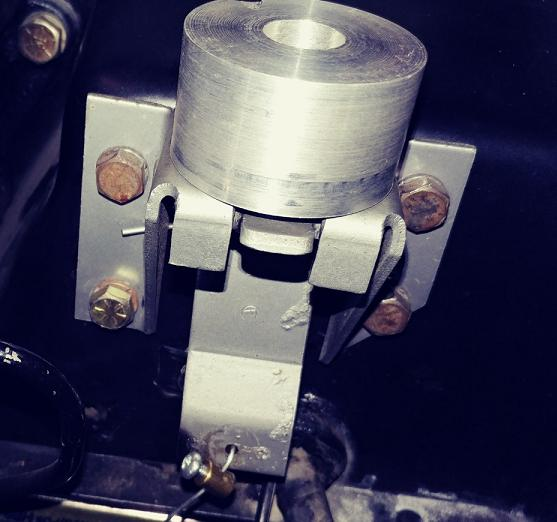
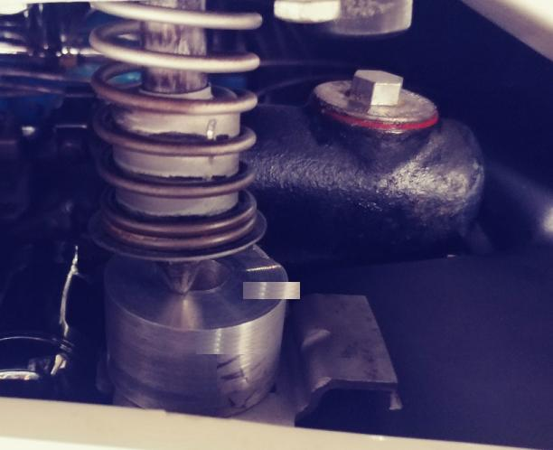

On the 1953-1959 installation: First if your car is a 1953-1957 you will
think the end is way longer then it needs to be. However, it is designed this way so that it
will fit both 1953-1957 and 1958-1959. The
58 and newer cars used a longer tool.
Of the portion of your lock that accepts the male pin is way
larger then the tool then you should be advised to replace this lever. The original hole size was .564 and if the
tool fits very loosely in the hole then your hole has opened up. If you use this tool and your hood pops up
when you drive the levers are bad and should be replaced.
Step 1 is to insert the tool in the female portion of the firewall lock. There should be a spring that holds this lever upward and when the male pin goes in it causes friction to hold the lock closed.

Step 2. Loosen the
bolts that hold the male lock on the hood so there is only light tension on it.
Step 3. Lower the hood, the male pin should fit into the top hole on the tool. Move the male hood lock until you obtain this. Open the hood and tighten the bolts. Proceed to do the other side in exactly the same manner. As you can see below this hood lock is way off center and needs to be adjusted.
Willcox
